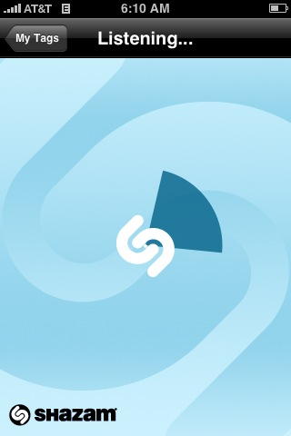
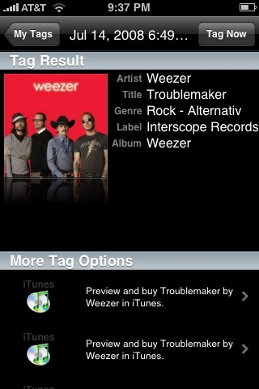
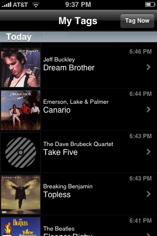

Coolest iPhone app ever

Now I've seen lots of audio fingerprinters in my day (we've even created our own here in the labs), but I've never had the chance to use one in the wild like this, and it is a lot of fun to use - and I get a kick every time it gets it right (which is almost always). The app really feels like magic. It also is quite robust to noise and listening conditions. I tried it with my little laptop speakers while sitting in the kitchen with the dishwasher running and my lovely wife talking to me. I've tried it in the car, on the highway with the windows open. It seemed that as long as I can hear the music, so can Shazam.

In my experience, Shazam is also really accurate - it has almost always given me the correct answer. Sometimes, it doesn't know the answer, and it will tell me so - but if it does give me a result, I can count on it being correct. The Shazam index of music seems to be pretty big. It was able to identify every song on the local head-banger radio station with no trouble, along with most things I tried in my personal collection, including recent releases like the latest Weezer album. Unsurprisingly, It was not able to identify songs that were pretty deep into the long tail - it didn't recognize "Harry and the Potters", or any of my Magnatune music.
Shazam keeps track of your 'tags' - the songs you've ID'd with the app. This lets you keep a log of all of the tracks that you've encountered in a day so you can follow up later on. It creates links to iTunes so you can buy the track, as well as links to YouTube videos of the track or artist. You can even take and attach a photo to a tag to help you remember the context of the tagging.

The application info page for Shazam says that it only going to be made available for free for a limited time, so grab it for free while you can. It really is a cool and useful app.
Update - For the curious, Shazam presented a paper describing the technology behind their fingerprinter at ISMIR 2003. The paper is a good read: An Industial-Strength Audio Search Algorithm (Note that the main ISMIR site is down, so this is a pointer to a cached copy at Columbia).

Do you know TrackID ? Is freely available for SonyEricsson mobiles since 2006. There is a Java version too........
Posted by rediscovering_the_world on July 15, 2008 at 11:32 AM EDT #